Chapter 1. Neural Networks and Gradient-Based Optimization
金融服务行业从根本上说是一个信息处理行业。投资基金处理信息以评估投资，保险公司处理信息以确定保险价格，而零售银行处理信息以决定向哪些客户提供哪些产品。因此，金融业率先采用计算机并非偶然。
第一个股票代号是印刷电报，它是在 1867 年发明的。第一台直接针对金融行业的机械加法机于 1885 年获得专利。然后在 1971 年，允许客户使用塑料卡提取现金的自动柜员机获得了专利。同年，第一个电子股票交易所纳斯达克开业，11 年后，1982 年，第一个彭博终端安装完毕。金融业和计算机业联姻的原因是，在这个行业，尤其是在投资领域，成功往往与你拥有的信息优势有关。
在华尔街早期，镀金时代的传奇人物厚颜无耻地利用私人信息。例如，当时最富有的人之一杰伊·古尔德在美国政府内部安插了一名间谍。鼹鼠会通知政府黄金销售，并试图通过它影响尤利西斯. s .格兰特总统和他的秘书。上世纪 30 年代末，证交会和 CFTC 站在投资者和这种信息优势之间。
随着信息优势不再是高于市场表现的可靠来源，聪明的金融模型取而代之。术语对冲基金早在 1949 年就被创造出来，哈里·马科维茨模型于 1953 年发表，1973 年，布莱克-斯科尔斯公式首次发表。自那时以来，该领域取得了很大进展，并开发了各种各样的金融产品。然而，随着这些模型的知识越来越广泛，使用它们的回报会减少。
当我们将金融业与现代计算相结合时，很明显，信息优势又回来了。这一次不是以内幕信息和肮脏交易的形式，而是来自对大量公开信息的自动分析。
今天的基金经理能够接触到的信息比他们的前辈做梦都想不到的多。然而，这本身是没有用的。比如我们看新闻报道。你可以通过互联网获得它们，而且它们很容易获取，但是要利用它们，计算机必须阅读、理解它们，并把它们放在上下文中。计算机必须知道一篇文章是关于哪家公司的，报道的是好消息还是坏消息，以及我们是否可以了解这家公司和文章中提到的另一家公司之间的关系。这些只是几个将故事联系起来的例子。掌握这种替代数据来源的公司，通常被称为 T2，通常会有优势。
但是它并没有就此停止。金融专业人士是昂贵的人，他们经常有六到七位数的薪水，并在世界上最昂贵的房地产中占据办公空间。这是合理的，因为许多金融专业人士是聪明、受过良好教育、工作努力的人，这种人很稀缺，需求很大。正因为如此，最大限度地提高这些人的生产力符合任何公司的利益。通过从最优秀的员工那里获得更多物有所值的东西，他们将允许公司提供更便宜或更多种类的产品。
例如，通过交易所交易基金进行被动投资，对大笔资金几乎不需要管理。被动投资工具的费用，如标准普尔 500 基金，通常远低于 1%。但随着现代计算技术的兴起，公司现在能够提高其资金管理者的生产率，从而降低他们的费用以保持竞争力。
这本书不仅仅是关于金融领域的投资或交易；这更像是计算机和金融之间爱情故事的直接结果。投资公司有客户，通常是保险公司或养老基金，这些公司本身是金融服务公司，反过来，也有客户，有养老金或保险的普通人。
大多数银行客户也是普通人，越来越多的人与银行、保险公司或养老金互动的主要方式是通过手机上的应用程序。
在今天之前的几十年里，零售银行依赖于这样一个事实，即人们必须面对面地进入分行，才能提取现金或进行交易。当他们在分行时，他们的顾问也可以卖给他们另一种产品，如抵押贷款或保险。今天的客户仍然希望购买抵押贷款和保险，但他们不再需要亲自到分行购买。在当今世界，银行倾向于在网上为客户提供建议，无论是通过应用程序还是网站。
只有当银行能够从客户的数据中了解他们的需求，并在线提供量身定制的体验时，这种在线方式才能发挥作用。同样，从客户的角度来看，他们现在希望能够通过手机提交保险索赔并获得即时响应。在当今世界，保险公司需要能够自动评估索赔并做出决策，以满足客户的需求。
这本书不是关于如何写交易算法来赚快钱。它是关于利用艺术和工艺来构建在金融行业有用的机器学习驱动的系统。
构建任何有价值的东西都需要大量的时间和努力。现在，打个经济学的比方，建造有价值的东西的市场是非常低效的。机器学习的应用将在未来几十年内改变行业，这本书将为你提供一个工具箱，让你成为变革的一部分。
本书中的许多例子使用了“金融数据”领域之外的数据本书中从未使用股票市场数据，做出这一决定有三个具体原因。
首先，所展示的例子展示了通常可以容易地应用于其他数据集的技术。因此，我们选择了一些数据集，它们展示了像您这样的专业人士将面临的一些共同挑战，同时还保持了计算上的易处理性。
其次，金融数据从根本上说是时间相关的。为了让这本书在更长的时间内有用，并确保随着机器学习变得更加突出，这本书仍然是你的工具包中至关重要的一部分，我们使用了一些非财务数据，以便这里讨论的数据仍然相关。
最后，使用替代和非经典数据旨在启发您思考在您的流程中还可以使用哪些其他数据。你能使用无人机拍摄的植物片段来增强你的谷物价格模型吗？你能利用网络浏览行为提供不同的金融产品吗？如果你想利用身边的数据，跳出框框思考是一项必要的技能。
“机器学习是计算机科学的子领域，它赋予计算机无需显式编程就能学习的能力。”
亚瑟·塞缪尔，1959 年
我们所说的机器学习是什么意思？今天大多数计算机程序都是由人类手工制作的。软件工程师精心设计出控制软件行为的每一条规则，然后将其翻译成计算机代码。
如果你正在以电子书的形式阅读这篇文章，现在就看看你的屏幕吧。你所看到的一切之所以会出现在那里，是因为某个地方的软件工程师制定了某种规则。这种方法已经让我们走了很远，但这并不是说它没有限制。有时候，可能有太多的规则需要人类去写。我们可能想不出规则，因为它们太复杂了，即使是最聪明的开发人员也想不出来。
作为一个简短的练习，花一分钟想出一个描述所有狗的规则列表，但要清楚地将狗与所有其他动物区分开来。皮草？嗯，猫也有毛。穿夹克的狗呢？那仍然是一只狗，只是穿了件夹克。研究人员花了数年时间试图制定这些规则，但收效甚微。
人类似乎并不能完美地分辨出为什么一个东西是狗，但是当他们看到一只狗的时候，他们就知道是一只狗。作为一个物种，我们似乎发现了一些具体的、难以描述的模式，总的来说，让我们把一种动物归类为狗。机器学习试图做同样的事情。我们让计算机通过模式检测开发自己的规则，而不是手工制作规则。
这有不同的工作方式，我们现在来看看三种不同类型的学习:监督学习、非监督学习和强化学习。
让我们回到我们的狗分类器。事实上，目前有许多这样的分类器在使用。例如，如果你使用谷歌图片，搜索“狗”，它会使用图像分类器向你展示狗的图片。这些分类器是在被称为监督学习的范式下训练的。
在监督学习中，我们有大量的训练示例，例如动物的图像，以及描述这些训练示例的预期结果的标签。例如，前面的图形带有“狗”的标签，而猫的图像带有“不是狗”的标签
如果我们有大量的这些标记训练样本，我们可以训练一个分类器来检测区分狗和所有其他动物的微妙统计模式。
提示
注:分类器根本不知道狗是什么。它只知道将图像与训练中的狗联系起来的统计模式。
如果监督学习分类器遇到与训练数据非常不同的东西，它通常会感到困惑，只会输出无意义的内容。
虽然监督学习在过去的几年里取得了巨大的进步，但本书的大部分内容将集中在带标签的例子上。然而，有时我们可能没有标签。在这种情况下，我们仍然可以使用机器学习来发现数据中隐藏的模式。
想象一下，一家公司的产品有很多客户。这些客户可能会被分成不同的细分市场，但我们不知道不同的细分市场是什么。我们也不能问客户他们属于哪个细分市场，因为他们可能不知道。你是洗发水市场的哪个细分市场？你知道洗发水公司是如何细分客户的吗？
在本例中，我们希望有一种算法可以查看来自客户的大量数据，并将它们分组。这是无监督学习的一个例子。
机器学习的这一领域远不如监督学习发达，但它仍然拥有巨大的潜力。
在强化学习中，我们训练在一个环境中采取行动的代理，比如路上的自动驾驶汽车。而我们没有标签，也就是说，我们无法判断在任何情况下正确的行为是什么，我们可以分配奖励或惩罚。例如，我们可以奖励与前车保持适当的距离。
驾驶教练不会告诉学生“将刹车踩到底，同时将方向盘向右移动两度”，而是告诉学生他们是否做得很好，而学生则计算出应该使用的刹车的准确数量。
强化学习在过去几年里也取得了一些显著的进展，被许多人认为是通向通用人工智能的一条有前途的道路，即计算机和人类一样聪明。
2009 年，三名谷歌工程师发表了一篇具有里程碑意义的论文，题为数据的不合理有效性。在论文中，他们描述了已经存在了很长时间的相对简单的机器学习系统如何在使用谷歌服务器上的海量数据时表现出更好的性能。事实上，他们发现，当输入更多数据时，这些简单的系统可以掌握以前认为不可能完成的任务。
从那里，研究人员很快开始重新审视旧的机器学习技术，并发现人工神经网络在大规模数据集上训练时表现特别好。大约在同一时间，计算能力变得便宜和充足，足以训练比以前大得多的网络。
这些更大的人工神经网络如此有效，以至于它们被命名为:深度神经网络，或深度学习。深度神经网络尤其擅长模式检测。他们可以找到复杂的模式，例如描述照片中人脸的明暗统计模式，只要给定足够的数据，他们就可以自动做到这一点。
因此，机器学习最好被理解为我们如何给计算机编程的范式转变。我们不是小心翼翼地手工制定规则，而是给计算机输入大量信息，训练它自己制定规则。
如果有大量的规则，或者即使这些规则很难描述，这种方法也是优越的。因此，现代机器学习是梳理金融业面临的海量数据的理想工具。
统计学上有一句话所有的模型都是错的，但有些是有用的。机器学习创建了难以置信的复杂统计模型，例如，在深度学习中，这些模型通常是人类无法解释的。它们确实有用，有很大的价值，但它们仍然是错误的。这是因为它们是复杂的黑盒，人们往往不会质疑机器学习模型，即使他们应该质疑它们，恰恰因为它们是黑盒。
总有一天，即使是最复杂的深度神经网络也会做出根本性的错误预测，就像先进的债务抵押债券 ( CDO )模型在 2008 年金融危机中所做的那样。更糟糕的是，黑盒机器学习模型将在贷款审批或保险方面做出数百万个决定，影响日常人们的生活，最终会做出错误的决定。
有时他们会有偏见。机器学习的好坏取决于我们提供给它的数据，这些数据在显示时往往会有偏差，这一点我们将在本章稍后讨论。这是我们必须花费大量时间来解决的问题，如果我们盲目地部署这些算法，我们也会自动进行歧视，这有可能导致另一场金融危机。
在金融行业尤其如此，算法往往会对人们的生活产生严重影响，同时又是保密的。通过大量使用数学而获得认可的不容置疑的秘密黑盒，对社会构成的威胁比你在电影中看到的有自我意识的人工智能接管世界要大得多。
虽然这不是一本伦理学的书，但对于该领域的任何从业者来说，熟悉他或她的工作的伦理含义是有意义的。除了推荐你阅读凯茜·奥尼尔的数学毁灭武器，还值得让你发誓模型师希波克拉底誓言。这一誓言是由伊曼纽尔·德曼(Emanuel Derman)和保罗·威尔莫特(Paul Wilmott)两位定量金融研究人员在 2008 年金融危机爆发后提出的:
“我会记得世界不是我造的，它不满足我的方程式。虽然我会大胆地使用模型来评估价值，但我不会对数学印象太深。我永远不会为了优雅而牺牲现实，而不解释我这样做的原因。我也不会让使用我的模型的人对它的准确性感到虚假的安慰。相反，我将明确它的假设和疏漏。我明白我的工作可能会对社会和经济产生巨大影响，其中许多影响超出了我的理解。”
近年来，机器学习取得了许多重大进展，研究人员掌握了以前被认为无法解决的任务。从识别图像中的物体到转录声音和玩围棋等复杂的棋盘游戏，现代机器学习已经在一系列令人眼花缭乱的任务中匹配并继续匹配甚至击败人类的表现。
有趣的是，深度学习是所有这些进步背后的方法。事实上，大部分进展来自深度学习的一个子领域，称为深度神经网络。虽然许多从业者熟悉标准的计量经济学模型，如回归，但很少有人熟悉这种新型的建模。
这本书的大部分致力于深度学习。这是因为它是机器学习最有前途的技术之一，将使任何掌握它的人都有能力处理以前认为不可能的任务。
在这一章中，我们将探索神经网络如何工作以及为什么工作，以便让你对这个主题有一个基本的了解。
在我们开始之前，您需要设置您的工作区。本书中的例子都是为了在 Jupyter 笔记本上运行。Jupyter 笔记本是一个交互式开发环境，主要用于数据科学应用，被认为是构建数据驱动应用的首选环境。
你既可以在本地机器上运行 Jupyter 笔记本，也可以在云中的服务器上运行，或者在 Kaggle 这样的网站上运行。
深度学习是计算机密集型的，在本书的例子中使用的数据大小经常超过千兆字节。它可以通过使用图形处理单元(GPU)来加速，这是为渲染视频和游戏而发明的。如果您有一台支持 GPU 的计算机，您可以在本地运行这些示例。如果没有这样的机器，建议使用 Kaggle kernels 之类的服务。
学习深度学习曾经是一项昂贵的努力，因为 GPU 是一种昂贵的硬件。虽然有更便宜的选择，但如果你购买一个强大的 GPU，价格可能高达 10，000 美元，在云中租用大约每小时 0.80 美元。
如果你有许多长期运行的培训工作，那么可能值得考虑构建一个“深度学习”盒子，一台带 GPU 的台式计算机。网上有无数这方面的教程，组装一个像样的盒子只要几百美元到 5000 美元。
不过，这本书里的例子都可以在 Kaggle 上免费运行。事实上，它们是利用这个网站开发的。
Kaggle 是谷歌旗下的一个流行的数据科学网站。它始于比赛，参与者必须建立机器学习模型才能做出预测。然而，这些年来，它也有了一个受欢迎的论坛，一个在线学习系统，以及对我们来说最重要的托管 Jupyter 服务。
要使用 Kaggle，你可以访问他们在 https://www.kaggle.com/的网站。为了使用该网站，您需要创建一个帐户。
创建帐户后，您可以点击主菜单中的内核找到内核页面，如下图所示:
在前面的截图中，您可以看到许多其他人已经编写和发布的内核。内核可以是私有的，但是发布内核是展示技能和分享知识的好方法。
要启动新内核，点击新内核。在随后的对话框中，您想要选择笔记本:
您将看到内核编辑器，看起来像前面的屏幕截图。
请注意，Kaggle 正在积极地迭代内核设计，因此一些元素可能位于不同的位置，但基本功能是相同的。笔记本最重要的部分是代码单元。在这里，您可以输入代码，并通过点击左下角的运行按钮来运行代码，或者按下 Shift + Enter 来运行代码。
您在一个单元格中定义的变量成为环境变量，因此您可以在另一个单元格中访问它们。Markdown 单元格允许您以 markdown 格式编写文本，以便为代码中正在发生的事情添加描述。你可以通过右上角的云按钮上传和下载笔记本。
要从内核编辑器发布笔记本，首先你必须点击提交&运行按钮，然后在设置中将笔记本设置为公共。要在您的笔记本上启用 GPU，请确保选中位于右下角的启用 GPU 按钮。重要的是要记住，这将重新启动你的笔记本，所以你的环境变量将会丢失。
一旦运行代码，运行按钮就会变成停止按钮。如果你的代码卡住了，你可以通过点击停止按钮来中断它。如果您想清除所有环境变量并重新开始，只需单击位于右下角的 restart 按钮。
有了这个系统，你可以把一个内核连接到 Kaggle 上的任何数据集，或者你可以直接上传一个新的数据集。属于这本书的笔记本已经带有数据连接。
Kaggle 内核预装了最常用的包，所以大多数时候你不必担心安装包。
有时候这本书确实使用了默认情况下没有安装在 Kaggle 中的定制包。在这种情况下，您可以在设置菜单的底部添加自定义软件包。当在本书中使用自定义软件包时，将提供安装自定义软件包的说明。
Kaggle 内核可以免费使用，可以为您节省大量时间和金钱，因此建议在 Kaggle 上运行代码示例。要复制笔记本，请转到每章代码部分开头提供的链接，然后单击 Fork Notebook 。注意 Kaggle 内核可以运行长达六个小时。
如果你有一台足够强大的机器来运行深度学习操作，你可以在本地运行代码样本。在这种情况下，强烈建议通过 Anaconda 安装 Jupyter。
要安装 Anaconda，只需访问https://www.anaconda.com/download下载发行版。图形安装程序将引导您完成在您的系统上安装 Anaconda 的必要步骤。在安装 Anaconda 时，您还将安装一系列有用的 Python 库，如 NumPy 和 matplotlib，它们将贯穿本书。
安装 Anaconda 之后，您可以通过打开您机器的终端并键入以下代码来本地启动 Jupyter 服务器:
然后，您可以访问终端中显示的 URL。这将带您到本地笔记本服务器。
要创建新笔记本，请点击右上角的新建。
本书中的所有代码示例都使用 Python 3，所以请确保您在本地笔记本中使用的是 Python 3。如果您在本地运行笔记本，您还需要安装 TensorFlow 和 Keras，这两个深度学习库在本书中通篇使用。
在安装 Keras 之前，我们需要先安装 TensorFlow。您可以通过打开终端窗口并输入以下命令来安装 TensorFlow:
$ sudo pip install TensorFlow
关于如何在 GPU 支持下安装 TensorFlow 的说明，只需点击此链接，您将获得相关说明:【https://www.tensorflow.org/。
值得注意的是，为了使用 CUDA 运行 TensorFlow，您需要一个支持 CUDA 的 GPU。关于如何安装 CUDA 的说明，请访问https://docs.nvidia.com/cuda/index.html。
在安装了tensor flow 之后，可以通过运行以下命令以同样的方式安装 Keras:
Keras 现在将自动使用 TensorFlow 后端。请注意，TensorFlow 1.7 将包含内置的 Keras，我们将在本章稍后介绍这一点。
亚马逊网络服务 ( AWS )提供了一种易于使用、预配置的方式来在云中运行深度学习。
关于如何建立一个亚马逊机器镜像 ( AMI )的指导，请访问https://aws.amazon.com/machine-learning/amis/。虽然 ami 是有报酬的，但它们可以比 Kaggle 内核运行更长时间。因此，对于大型项目来说，使用 AMI 而不是内核可能是值得的。
要在 AMI 上运行本书的笔记本，首先设置 AMI，然后从 GitHub 下载笔记本，然后将它们上传到您的 AMI。你也必须从 Kaggle 下载数据。参见使用本地数据部分的说明。
关于如何最好地看待神经网络有许多观点，但也许最有用的观点是将它们视为函数逼近器。数学中的函数将一些输入、 x、与一些输出、 y 联系起来。我们可以把它写成下面的公式:
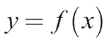
一个简单的函数可能是这样的:
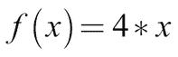
在这种情况下，我们可以给函数一个输入， x ，它会把它翻四倍:
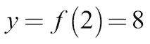
你可能在学校里见过这样的函数，但是函数可以做得更多；例如，他们可以将一个集合中的元素(函数接受的值的集合)映射到另一个集合中的元素。这些集合可以不是简单的数字。
例如，函数还可以将图像映射到图像中内容的标识:
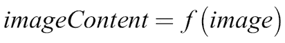
该函数将猫的图像映射到标签“cat”，如下图所示:
我们应该注意，对于计算机来说，图像是充满数字的矩阵，对图像内容的任何描述也将存储为数字矩阵。
一个神经网络，如果足够大，可以逼近任何函数。数学上已经证明，一个无限大的网络可以逼近每一个函数。虽然我们不需要使用无限大的网络，但我们确实在使用非常大的网络。
现代深度学习架构可能有数十甚至数百层和数百万个参数，因此仅存储模型就已经占用了几千兆字节。这意味着，如果神经网络足够大，它也可以近似我们的函数， f ，用于将图像映射到它们的内容。
神经网络必须“足够大”的条件解释了为什么深度(大)神经网络已经起飞。“足够大”的神经网络可以逼近任何函数的事实意味着它们对大量任务都是有用的。
在这本书的过程中，我们将建立强大的神经网络，能够逼近极其复杂的函数。我们将把文本映射到命名实体，把图像映射到它们的内容，甚至把新闻文章映射到它们的摘要。但是现在，我们将处理一个简单的问题，这个问题可以用逻辑回归来解决，这是一个在经济学和金融学中都很流行的技术。
我们将处理一个简单的问题。给定一个输入矩阵， X ，我们要输出矩阵的第一列， X 1 。在这个例子中，我们将从数学的角度来处理这个问题，以便对正在发生的事情获得一些直觉。
在本章的后面，我们将实现我们在 Python 中描述的内容。我们已经知道，我们需要数据来训练神经网络，因此这里看到的数据将是我们练习的数据集:
|
X 1
|
X 2
|
X 3
|
y
|
|---|
|
0
|
一
|
0
|
0
|
|
一
|
0
|
0
|
一
|
|
一
|
一
|
一
|
一
|
|
0
|
一
|
一
|
0
|
在数据集中，每一行都包含一个输入向量 X 和一个输出向量 y 。
数据遵循以下公式:
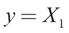
我们想要近似的函数如下:
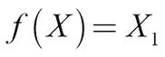
在这种情况下，写下函数相对简单。但是，请记住，在大多数情况下，不可能写下函数，因为由深度神经网络表达的函数可能会变得非常复杂。
对于这个简单的函数，一个只有一层的浅层神经网络就足够了。这种浅层网络也被称为逻辑回归。
正如我们刚才解释的，最简单的神经网络是一个逻辑回归器。逻辑回归接受任何范围的值，但只输出 0 到 1 之间的值。
逻辑回归适用的应用范围很广。一个这样的例子是预测房主拖欠抵押贷款的可能性。
当我们试图预测某人拖欠付款的可能性时，我们可能会考虑各种各样的值，如债务人的工资、他们是否有车、他们工作的安全性等等，但可能性总是介于零和一之间的值。即使是最差的债务人，违约概率也不会超过 100%，最好的债务人也不会低于 0%。
下图显示了逻辑回归量。 X 是我们的输入向量；这里显示为三个组件， X 1 ， X 2 ， X 3 。
W 是三个权重的向量。你可以把它想象成三条线各自的粗细。 W 决定了 X 的每个值进入下一层的量。 b 为偏置，可以上下移动该层的输出:
为了计算回归变量的输出，我们必须首先做一个线性步骤。我们计算输入的点积 X ，以及权重 W 。这等同于将 X 的每个值乘以其权重，然后求和。然后在这个数字上加上偏差， b 。之后，我们做一个非线性步骤。
在非线性步骤中，我们通过激活函数运行线性中间产品z；在这种情况下，sigmoid 函数。sigmoid 函数将输入值压缩为 0 到 1 之间的输出值:
如果前面所有的数学对你来说有点过于理论化，那么欢呼吧！我们现在将实现同样的东西，但这次是用 Python。在我们的例子中，我们将使用一个名为 NumPy 的库，它可以在 Python 中实现简单快速的矩阵运算。
NumPy 预装了 Anaconda 和 Kaggle 内核。为了确保我们在所有实验中得到相同的结果，我们必须设置一个随机种子。我们可以通过运行以下代码来实现这一点:
import numpy as np
np.random.seed(1)
由于我们的数据集非常小，我们将手动将其定义为 NumPy 矩阵，如下所示:
X = np.array([[0,1,0],
[1,0,0],
[1,1,1],
[0,1,1]])
y = np.array([[0,1,1,0]]).T我们可以定义 sigmoid，它通过一个 Python 函数形式的激活函数将所有值压缩为 0 到 1 之间的值:
def sigmoid(x):
return 1/(1+np.exp(-x))到目前为止，一切顺利。我们现在需要初始化 W 。在这种情况下，我们实际上已经知道 W 应该有什么值。但是我们还不知道函数的其他问题。所以，我们需要随机分配权重。
权重通常随机分配，平均值为 0，偏差通常默认设置为零。NumPy 的random函数期望接收随机矩阵的形状作为元组传递，所以random((3,1))创建一个 3x1 矩阵。默认情况下，生成的随机值介于 0 和 1 之间，平均值为 0.5，标准差为 0.5。
我们希望随机值的平均值为 0，标准偏差为 1，因此我们首先将生成的值乘以 2，然后减去 1。我们可以通过运行以下代码来实现这一点:
W = 2*np.random.random((3,1)) - 1
b = 0
完成后，所有的变量都设置好了。现在，我们可以继续进行线性步骤，具体如下:
现在我们可以执行非线性步骤，运行如下:
现在，如果我们打印出A，我们将得到以下输出:
out:
[[ 0.60841366]
[ 0.45860596]
[ 0.3262757 ]
[ 0.36375058]]
但是等等！这个输出看起来一点也不像我们想要的输出， y ！显然，我们的回归变量代表了某个函数，但它离我们想要的函数还很远。
为了更好地逼近我们想要的函数，我们必须调整权重 W 和偏差 b 。为此，在下一节中，我们将优化模型参数。
我们已经看到，我们需要调整模型的权重和偏差，统称为参数，以便更接近我们想要的函数。
换句话说，我们需要通过我们的模型可以表示的可能函数的空间来寻找一个函数 ，它尽可能地匹配我们想要的函数 f 。
，它尽可能地匹配我们想要的函数 f 。
但是我们怎么知道我们有多接近呢？事实上，由于我们不知道 f ，我们无法直接知道我们的假设 与 f 有多接近。但我们能做的是测量
与 f 有多接近。但我们能做的是测量 的输出与 f 的输出匹配程度。给定 X 的 f 的预期输出为标签， y 。因此，我们可以通过找到一个函数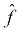来尝试逼近 f ，给定 X ，其输出也是 y 。
的输出与 f 的输出匹配程度。给定 X 的 f 的预期输出为标签， y 。因此，我们可以通过找到一个函数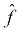来尝试逼近 f ，给定 X ，其输出也是 y 。
我们知道以下是真实的:
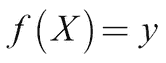
我们还知道:
我们可以通过使用以下公式进行优化来尝试找到 f :
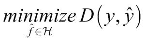
在这个公式中，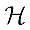是我们的模型可以表示的函数的空间，也称为假设空间，而 D 是距离函数，我们用它来评估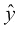和 y 有多接近。
注意
注意:这种方法做出了一个重要的假设，即我们的数据 X 和标签 y 代表我们想要的函数 f 。情况并非总是如此。当我们的数据包含系统性偏差时，我们可能会得到一个与我们的数据非常吻合但与我们想要的不同的函数。
优化模型参数的一个例子来自人力资源管理。想象一下，你正试图建立一个模型来预测债务人拖欠贷款的可能性，并以此来决定谁应该获得贷款。
作为训练数据，您可以使用人类银行经理多年来做出的贷款决策。然而，这带来了一个问题，因为这些经理可能会有偏见。例如，黑人等少数民族在历史上很难获得贷款。
也就是说，如果我们使用这些训练数据，我们的函数也会呈现出这种偏差。你最终会得到一个反映甚至放大人类偏见的函数，而不是创建一个擅长预测谁是好债务人的函数。
相信神经网络会找到我们正在寻找的直观功能是一个常见的错误。实际上，它会找到最符合数据的函数，而不考虑它是否是所需的函数。
我们之前看到了如何通过最小化距离函数来优化参数。这个距离函数，也称为损失函数，是我们用来评估可能函数的性能度量。在机器学习中，损失函数衡量模型的表现有多差。高损失函数与低精度密切相关，而如果函数低，则模型运行良好。
在这种情况下，我们的问题是一个二元分类问题。正因为如此，我们将使用二元交叉熵损失，正如我们在下面的公式中看到的:
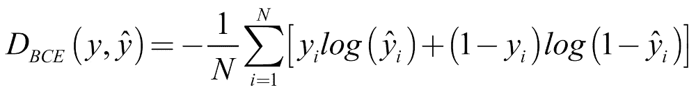
让我们一步一步地研究这个公式:
- D BCE :这是二元交叉熵损失的距离函数。
- 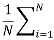:一批 N 个样品的损耗为所有样品的平均损耗。
- 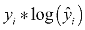:只有真值yIT13】为 1 时，损失的这一部分才会起作用。如果yIT17】为 1，我们希望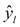尽可能接近 1，这样可以实现低损耗。
- 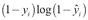:如果yIT23】为 0，这部分损失就开始起作用。如果是这样，我们希望
 也接近 0。
也接近 0。
在 Python 中，该损失函数的实现如下:
def bce_loss(y,y_hat):
N = y.shape[0]
loss = -1/N * (y*np.log(y_hat) + (1 - y)*np.log(1-y_hat))
return loss
我们的逻辑回归器的输出A,等于 ，因此我们可以计算二元交叉熵损失如下:
，因此我们可以计算二元交叉熵损失如下:
loss = bce_loss(y,A)
print(loss)
正如我们所看到的，这是一个相当高的损失，所以我们现在应该看看如何改进我们的模型。这里的目标是使这种损失为零，或者至少接近于零。
你可以把不同函数假设的损失看作一个曲面，有时也称为“损失曲面”损失面很像山脉，因为我们在山顶有高点，在山谷有低点。
我们的目标是找到山脉的绝对最低点:最深的山谷，或“全球最小值”全局最小值是函数假设空间中损失处于最低点的点。
相比之下，“局部最小值”是指损失低于周围空间的点。局部最小值是有问题的，因为尽管从表面上看，它们似乎是一个很好的函数，但还有更好的函数可用。当我们现在通过梯度下降时，请记住这一点，梯度下降是一种在函数空间中寻找最小值的方法。
现在我们知道了我们判断候选模型的依据，我们如何调整参数来获得更好的模型？最流行的神经网络优化算法称为梯度下降。在这种方法中，我们沿着损失函数的导数的斜率缓慢移动。
想象一下，你在一个山林中徒步旅行，你在一个点上迷失了方向，现在你在森林里试图找到山谷的底部。这里的问题是因为有太多的树，你看不到山谷的底部，只能看到你脚下的地面。
现在问问你自己:你如何找到下去的路？一个明智的方法是沿着斜坡走，斜坡往下滑，你就往下滑。这与梯度下降算法采用的方法相同。
回到我们的重点，在这个森林情况下，损失函数是山，为了获得低损失，算法遵循损失函数的斜率，即导数。当我们下山时，我们正在更新我们的位置坐标。
该算法会更新神经网络的参数，如下图所示:
梯度下降要求损失函数对于我们想要优化的参数具有导数。这对于大多数监督学习问题来说很有效，但是当我们想要解决没有明显导数的问题时，事情变得更加困难。
梯度下降也只能优化我们模型的参数、权重和偏差。它不能做的是优化我们的模型有多少层或者它应该使用哪些激活函数，因为没有办法计算相对于模型拓扑的梯度。
这些无法通过梯度下降进行优化的设置被称为超参数，通常由人工设置。你刚刚看到我们如何逐渐缩小损失函数，但我们如何更新参数？为此，我们需要另一种叫做反向传播的方法。
反向传播允许我们对模型的参数应用梯度下降更新。为了更新参数，我们需要计算损失函数相对于权重和偏差的导数。
如果您将我们模型的参数想象成我们山林类比中的地理坐标，那么计算参数的损失导数就像检查北向的山坡，看您应该向北还是向南。
下图显示了通过逻辑回归的向前和向后传递:
为了简单起见，我们将损失函数对任何变量的导数称为 d 变量。例如，我们将损失函数相对于权重的导数写成 dW 。
为了计算模型中不同参数的梯度，我们可以利用链式法则。您可能记得链式法则如下:
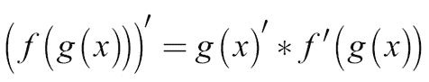
这有时也写成如下:
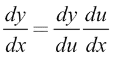
链式法则基本上是说，如果你想通过许多嵌套函数求导，你要把内层函数的导数和外层函数的导数相乘。
这很有用，因为神经网络和我们的逻辑回归器是嵌套的函数。输入经过线性步骤，是输入、权重和偏差的函数；并且线性步进的输出 z 通过激活函数。
因此，当我们计算相对于权重和偏差的损失导数时，我们将首先计算相对于线性阶跃输出的损失导数， z ，并用它来计算 dW 。在代码中，它看起来像这样:
dz = (A - y)
dW = 1/N * np.dot(X.T,dz)
db = 1/N * np.sum(dz,axis=0,keepdims=True)
现在我们有了梯度，我们如何改进我们的模型？回到我们的山的比喻，现在我们知道山在北方和东方向上，我们去哪里？当然是南面和西面了！
从数学上来说，我们走与梯度相反的方向。如果梯度相对于一个参数是正的，也就是说，斜率是向上的，那么我们减小这个参数。如果它是负的，也就是向下倾斜，我们增加它。当我们的坡度更陡时，我们移动我们的坡度更多。
参数 p 的更新规则如下:
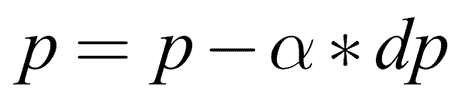
这里 p 是模型参数(权重或偏差)， dp 是相对于 p 的损失导数， 是学习率。
是学习率。
学习率类似于汽车中的油门踏板。它决定了我们想要应用多少渐变更新。这是我们必须手动设置的超参数之一，我们将在下一章讨论。
在代码中，我们的参数更新如下所示:
alpha = 1
W -= alpha * dW
b -= alpha * db
干得好！我们现在已经看了训练神经网络所需的所有部分。在本节接下来的几个步骤中，我们将训练一个单层神经网络，也称为逻辑回归器。
首先，我们将在定义数据之前导入 numpy。我们可以通过运行以下代码来实现这一点:
import numpy as np
np.random.seed(1)
X = np.array([[0,1,0],
[1,0,0],
[1,1,1],
[0,1,1]])
y = np.array([[0,1,1,0]]).T下一步是我们定义 sigmoid 激活函数和损失函数，我们可以用下面的代码来完成:
def sigmoid(x):
return 1/(1+np.exp(-x))
def bce_loss(y,y_hat):
N = y.shape[0]
loss = -1/N * np.sum((y*np.log(y_hat) + (1 - y)*np.log(1-y_hat)))
return loss然后，我们将随机初始化我们的模型，这可以通过下面的代码来实现:
W = 2*np.random.random((3,1)) - 1
b = 0
作为这个过程的一部分，我们还需要设置一些超参数。第一个是 alpha，我们在这里将它设置为1。Alpha 最好理解为步长。一个大的 alpha 值意味着虽然我们的模型可以快速训练，但也可能会超出目标。相比之下，较小的 alpha 允许梯度下降更加小心地行走，并找到它可能会越过的小山谷。
第二个是我们想要运行训练过程的次数，也称为我们想要运行的时期数。我们可以用下面的代码设置参数:
因为它用于训练循环，所以定义数据中的样本数也很有用。我们还将定义一个空数组，以便跟踪模型随时间的损失。为此，我们只需运行以下命令:
N = y.shape[0]
losses = []
现在我们来看主要的训练循环:
for i in range(epochs):
# Forward pass
z = X.dot(W) + b
A = sigmoid(z)
# Calculate loss
loss = bce_loss(y,A)
print('Epoch:',i,'Loss:',loss)
losses.append(loss)
# Calculate derivatives
dz = (A - y)
dW = 1/N * np.dot(X.T,dz)
db = 1/N * np.sum(dz,axis=0,keepdims=True)
# Parameter updates
W -= alpha * dW
b -= alpha * db运行上述代码的结果是，我们将获得以下输出:
out:
Epoch: 0 Loss: 0.822322582088
Epoch: 1 Loss: 0.722897448125
Epoch: 2 Loss: 0.646837651208
Epoch: 3 Loss: 0.584116122241
Epoch: 4 Loss: 0.530908161024
Epoch: 5 Loss: 0.48523717872
Epoch: 6 Loss: 0.445747750118
Epoch: 7 Loss: 0.411391164148
Epoch: 8 Loss: 0.381326093762
Epoch: 9 Loss: 0.354869998127
Epoch: 10 Loss: 0.331466036109
Epoch: 11 Loss: 0.310657702141
Epoch: 12 Loss: 0.292068863232
Epoch: 13 Loss: 0.275387990352
Epoch: 14 Loss: 0.260355695915
Epoch: 15 Loss: 0.246754868981
Epoch: 16 Loss: 0.234402844624
Epoch: 17 Loss: 0.22314516463
Epoch: 18 Loss: 0.21285058467
Epoch: 19 Loss: 0.203407060401
你可以看到在输出过程中，损耗稳步下降，从0.822322582088开始，到0.203407060401结束。
我们可以把损失绘制成图表，以便更好地观察它。为此，我们只需运行以下代码:
import matplotlib.pyplot as plt
plt.plot(losses)
plt.xlabel('epoch')
plt.ylabel('loss')
plt.show()这将输出以下图表:
我们在本章前面已经确定，在中，为了逼近更复杂的函数，我们需要更大更深的网络。创建一个更深的网络是通过层层叠加来实现的。
在本节中，我们将构建一个双层神经网络，如下图所示:
输入与第一组权重W1T10】相乘，产生中间产物z1T14】。然后通过一个激活函数运行，这将产生第一层的激活， A 1 。
这些激活然后与第二层权重相乘， W 2 ，产生中间产品， z 2 。这通过第二个激活函数运行，该函数产生我们的神经网络的输出A2T30】:
z1 = X.dot(W1) + b1
a1 = np.tanh(z1)
z2 = a1.dot(W2) + b2
a2 = sigmoid(z2)
注意
注:这个例子的完整代码可以在本书的 GitHub 库中找到。
如你所见，第一个激活函数不是 sigmoid 函数，而是一个 tanh 函数。Tanh 是一种常用的隐藏层激活函数，其工作方式与 sigmoid 非常相似，只是它挤压的值在-1 和 1 之间，而不是 0 和 1 之间:
通过的反向传播我们更深层次的网络也遵循链式法则。我们回到网络，乘以导数:
前面的方程可以表示为下面的 Python 代码:
# Calculate loss derivative with respect to the output
dz2 = bce_derivative(y=y,y_hat=a2)
# Calculate loss derivative with respect to second layer weights
dW2 = (a1.T).dot(dz2)
# Calculate loss derivative with respect to second layer bias
db2 = np.sum(dz2, axis=0, keepdims=True)
# Calculate loss derivative with respect to first layer
dz1 = dz2.dot(W2.T) * tanh_derivative(a1)
# Calculate loss derivative with respect to first layer weights
dW1 = np.dot(X.T, dz1)
# Calculate loss derivative with respect to first layer bias
db1 = np.sum(dz1, axis=0)
请注意，虽然输入和输出的大小取决于您的问题，但您可以自由选择隐藏层的大小。隐藏层是另一个你可以调整的超参数。隐藏层越大，你能近似的函数就越复杂。然而，另一方面，这个模型可能会过拟合。也就是说，它可能会开发一个复杂的函数来拟合噪声，而不是数据中的真实关系。
看看下面的图表。我们在这里看到的是两个卫星数据集，它们可以清楚地分开，但现在有很多噪音，这使得分离甚至对人类来说也很难看到。您可以在第 1 章 GitHub repo 中找到两层神经网络以及这些样本生成的完整代码:
下图显示了决策边界的可视化效果，即模型分隔两个类的线，使用的隐藏层大小为 1:
如你所见，网络并没有捕捉到数据的真实关系。这是因为它太简单了。在下图中，您将看到隐藏层大小为 500 的网络的决策边界:
这个模型显然适合噪音，但不适合卫星。在这种情况下，右侧隐藏层的大小约为 3。
找到合适大小和数量的隐藏层是设计有效学习模型的关键部分。用 NumPy 构建模型有点笨拙，而且很容易出错。幸运的是，有一个更快更简单的工具来构建神经网络，叫做 Keras。
Keras 是一个高级的神经网络 API，可以运行在 TensorFlow 之上，tensor flow 是一个用于数据流编程的库。这意味着它可以以高度优化的方式运行神经网络所需的操作。所以比 TensorFlow 快很多，用起来也方便很多。因为 Keras 充当 TensorFlow 的接口，所以它可以更容易地构建更复杂的神经网络。在本书的其余部分，我们将与 Keras 库合作，以构建我们的神经网络。
在导入 Keras 的时候，我们通常只是导入我们会用到的模块。在这种情况下，我们需要两种类型的层:
Dense层是我们在本章中已经了解的普通层- 层允许我们添加一个激活功能
我们可以通过运行以下代码来导入它们:
from keras.layers import Dense, Activation
Keras 提供了两种构建模型的方法，通过顺序 API 和功能 API。因为顺序 API 更容易使用，并且允许更快速的建模，所以我们将在本书的大部分内容中使用它。然而，在后面的章节中，我们也将看看函数式 API。
我们可以通过这段代码访问顺序 API:
from keras.models import Sequential
在顺序 API 中构建神经网络的工作方式如下。
首先，我们创建一个没有层的空序列模型:
然后我们可以给这个模型添加图层，就像叠一个图层蛋糕一样，用model.add()。
对于第一层，我们必须指定该层的输入尺寸。在我们的例子中，数据有两个特征，点的坐标。我们可以用下面的代码添加一个大小为 3 的隐藏层:
model.add(Dense(3,input_dim=2))
注意我们是如何在model.add()中嵌套函数的。我们指定了Dense层，位置参数是层的大小。这个Dense层现在只做线性步骤。
要添加一个tanh激活函数，我们调用如下:
model.add(Activation('tanh'))然后，我们以同样的方式添加线性步长和输出层的激活函数，方法是调用:
model.add(Dense(1))
model.add(Activation('sigmoid'))然后，为了获得模型中所有层的概览,我们可以使用以下命令:
这产生了模型的以下概述:
out:
Layer (type) Output Shape Param #
=================================================================
dense_3 (Dense) (None, 3) 9
_________________________________________________________________
activation_3 (Activation) (None, 3) 0
_________________________________________________________________
dense_4 (Dense) (None, 1) 4
_________________________________________________________________
activation_4 (Activation) (None, 1) 0
=================================================================
Total params: 13
Trainable params: 13
Non-trainable params: 0
您可以看到图层被很好地列出，包括它们的输出形状和图层的参数数量。None位于输出形状中，意味着该层在该维度中没有固定的输入大小，并且将接受我们提供给它的任何内容。在我们的例子中，这意味着该层将接受任意数量的样本。
几乎在每个网络中，你都会看到第一维的输入维是这样可变的，以适应不同数量的样本。
在我们开始训练模型之前，我们必须指定我们到底想要如何训练模型；更重要的是，我们需要指定我们想要使用哪个优化器和哪个损失函数。
到目前为止，我们使用的简单优化器被称为随机梯度下降，或 SGD 。要查看更多优化器，请参见第 2 章、将机器学习应用于结构化数据。
我们用于这个二进制分类问题的损失函数被称为二进制交叉熵。我们还可以指定我们希望在培训期间跟踪哪些指标。在我们的例子中，准确性，或者简单地说，跟踪以下内容会很有趣:
model.compile(optimizer='sgd',
loss='binary_crossentropy',
metrics=['acc'])现在我们已经准备好运行培训流程，我们可以用下面的代码行来完成:
history = model.fit(X,y,epochs=900)
这将为模型训练 900 次迭代，也称为历元。输出应该类似于以下内容:
Epoch 1/900
200/200 [==============================] - 0s 543us/step -
loss: 0.6840 - acc: 0.5900
Epoch 2/900
200/200 [==============================] - 0s 60us/step -
loss: 0.6757 - acc: 0.5950
...
Epoch 899/900
200/200 [==============================] - 0s 90us/step -
loss: 0.2900 - acc: 0.8800
Epoch 900/900
200/200 [==============================] - 0s 87us/step -
loss: 0.2901 - acc: 0.8800
训练过程的完整输出在中间被截断了，这是为了节省书中的空间，但你可以看到，损失不断下降，而准确性上升。换句话说，成功！
在本书的过程中，我们将为这些方法添加更多的附加功能。但此时此刻，我们对深度学习的理论已经有了相当扎实的理解。我们只是缺少了一个构件:Keras 实际上是如何工作的？什么是张量流？还有为什么深度学习在 GPU 上运行速度更快？
我们将在本章的下一节，也是最后一节回答这些问题。
Keras 是一个高级的库，可以作为 TensorFlow 的简化接口。这意味着 Keras 本身不做任何计算；它只是一种与后台运行的 TensorFlow 进行交互的简单方式。
TensorFlow 是 Google 开发的软件库，非常受深度学习的欢迎。在本书中，我们通常尝试仅通过 Keras 使用 TensorFlow，因为这比直接使用 TensorFlow 更容易。然而，有时我们可能想写一些 TensorFlow 代码来构建更高级的模型。
TensorFlow 的目标是尽可能快地运行深度学习所需的计算。顾名思义，它通过在数据流图中使用张量来做到这一点。从 1.7 版本开始，Keras 现在也是 TensorFlow 的核心部分。
因此，我们可以通过运行以下命令来导入 Keras 层:
from tensorflow.keras.layers import Dense, Activation
这本书将 Keras 作为一个独立的图书馆。然而，有一天你可能想为 Keras 使用不同的后端，因为如果我们有更短的import语句，它会使代码更干净。
张量是基于特定规则变换的数字数组。最简单的张量是一个单一的数字。这也称为标量。标量有时被称为零秩张量。
下一个张量是一个向量，也称为秩一张量。下一个是矩阵，叫做二阶张量；立方体矩阵，称为秩三张量；诸如此类。你可以在下表中看到排名:
|
军阶
|
名字
|
快车
|
|---|
|
0
|
数量
|
重要
|
|
一
|
矢量
|
幅度和方向
|
|
2
|
[数]矩阵
|
数字表
|
|
3
|
立方体矩阵
|
数字的立方
|
|
n
|
n 维矩阵
|
你明白了吗
|
这本书主要用张量这个词来表示三阶或更高阶的张量。
TensorFlow 和其他所有深度学习库都是沿着计算图进行计算的。在计算图中，矩阵乘法或激活函数等操作是网络中的节点。张量在不同的运算之间沿着图的边传递。
通过我们的简单神经网络的正向传递具有以下图形:
将计算结构化为图形的优点是更容易并行运行节点。通过并行计算，我们不需要一台非常快的机器；我们也可以用许多缓慢的计算机来完成快速计算，这些计算机将任务分开。
这就是 GPU 对于深度学习如此有用的原因。GPU 有许多小内核，而 CPU 只有几个快速内核。现代 CPU 可能只有四个核心，而现代 GPU 可能有数百甚至数千个核心。
一个非常简单的模型的整个图形可能看起来非常复杂，但是你可以看到密集层的组成部分。有一个矩阵乘法 ( matmul )，添加偏置和一个 ReLU 激活功能:
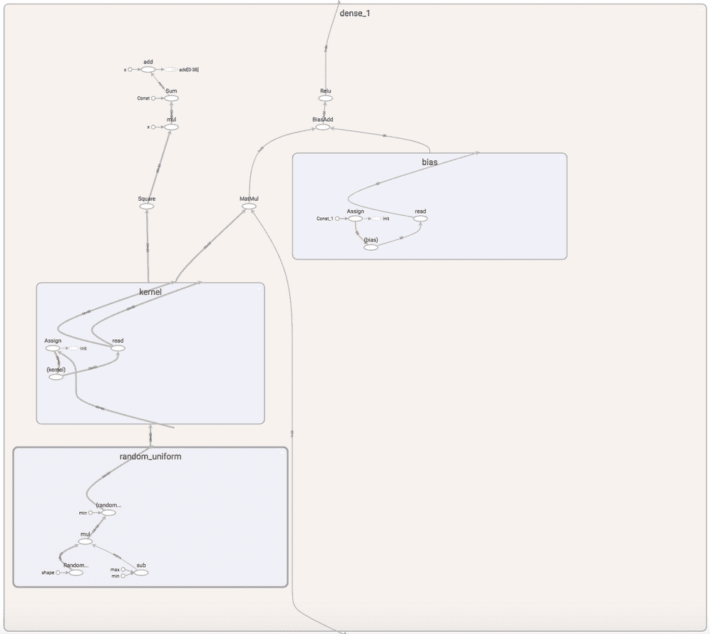
张量流中单层的计算图。截图自 TensorBoard。
使用这样的计算图的另一个优势是 TensorFlow 和其他库可以快速自动地计算这个图的导数。正如我们在本章所探讨的，计算导数是训练神经网络的关键。
既然我们已经完成了这个激动人心的旅程的第一章，我有一个挑战给你！你会发现你可以做的一些练习都是围绕着我们在本章中所讨论的主题的！
那么，为什么不试着做以下事情呢:
- 将 Python 中的两层神经网络扩展为三层。
- 在 GitHub 存储库中，您会发现一个名为
1 Excel Exercise的 Excel 文件。目标是根据品种数据对三种葡萄酒进行分类。为此，在 Excel 中建立一个逻辑回归方程。 - 在 Excel 中构建两层神经网络。
- 玩转 2 层神经网络的隐藏层大小和学习速率。哪些选项提供最低的损失？最低的损失是否也抓住了真实的关系？
就是这样！我们已经了解了神经网络是如何工作的。在本书的其余部分，我们将看看如何建立更复杂的神经网络，可以近似更复杂的函数。
事实证明，需要对基本结构进行一些调整，以便它能够很好地完成特定的任务，例如图像识别。然而，本章介绍的基本思想保持不变:
- 神经网络起到近似器的作用
- 我们通过损失函数来衡量我们的近似函数
 的表现
的表现 - 通过在损失函数相对于参数的导数的相反方向上更新参数来优化模型的参数
- 在称为反向传播的过程中，使用链式法则通过模型反向计算导数
本章的关键在于，当我们在寻找函数 f 时，我们可以通过优化一个函数来尝试找到它，就像在数据集上执行 f 一样。一个微妙但重要的区别是，我们根本不知道是否像 f 一样工作。一个经常被引用的例子是一个军事项目，该项目试图使用深度学习来识别图像中的坦克。该模型在数据集上训练得很好，但一旦五角大楼想要尝试他们的新坦克定位设备，它就悲惨地失败了。
在坦克的例子中，五角大楼花了一段时间才弄清楚，在他们用来开发模型的数据集中，所有坦克的照片都是在阴天拍摄的，没有坦克的照片是在晴天拍摄的。这个模型没有学会识别坦克，而是学会了识别灰色的天空。
这只是一个例子，说明你的模型可能与你的想法，甚至是你的计划大相径庭。有缺陷的数据可能会严重影响你的模型，有时你甚至不会注意到。然而，对于每一次失败，深度学习都有大量的成功故事。这是将重塑金融业面貌的高影响力技术之一。
在下一章中，我们将尝试使用金融中一种常见的数据，结构化表格数据。更具体地说，我们将解决欺诈问题，这是许多金融机构不得不处理的问题，现代机器学习是解决这一问题的便捷工具。我们将学习如何使用 Keras、scikit-learn 和 XGBoost 准备数据和进行预测。